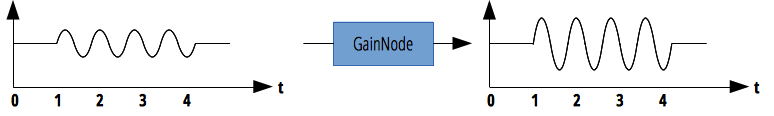

{{ APIRef("Web Audio API") }}
The GainNode interface represents a change in volume. It is an {{domxref("AudioNode")}} audio-processing module that causes a given gain to be applied to the input data before its propagation to the output. A GainNode always has exactly one input and one output, both with the same number of channels.
The gain is a unitless value, changing with time, that is multiplied to each corresponding sample of all input channels. If modified, the new gain is instantly applied, causing unaesthetic 'clicks' in the resulting audio. To prevent this from happening, never change the value directly but use the exponential interpolation methods on the {{domxref("AudioParam")}} interface.

| Number of inputs | 1 |
|---|---|
| Number of outputs | 1 |
| Channel count mode | "max" |
| Channel count | 2 (not used in the default count mode) |
| Channel interpretation | "speakers" |
GainNode object. You shouldn't manually create a gain node; instead, use the method {{domxref("BaseAudioContext.createGain")}}.Inherits properties from its parent, {{domxref("AudioNode")}}.
AudioParam to change the effect of gain.No specific method; inherits methods from its parent, {{domxref("AudioNode")}}.
{{page("/en-US/docs/Web/API/AudioContext.createGain","Example")}}
{{Compat}}